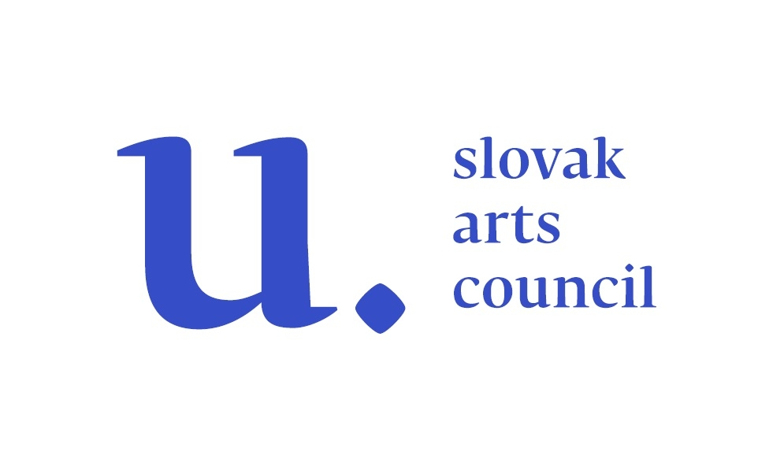
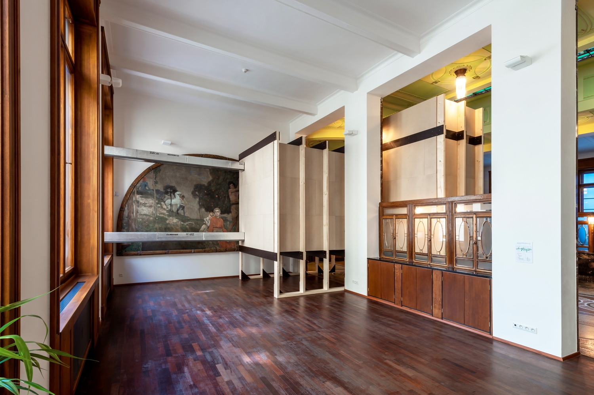
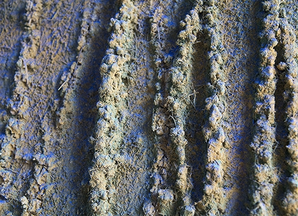
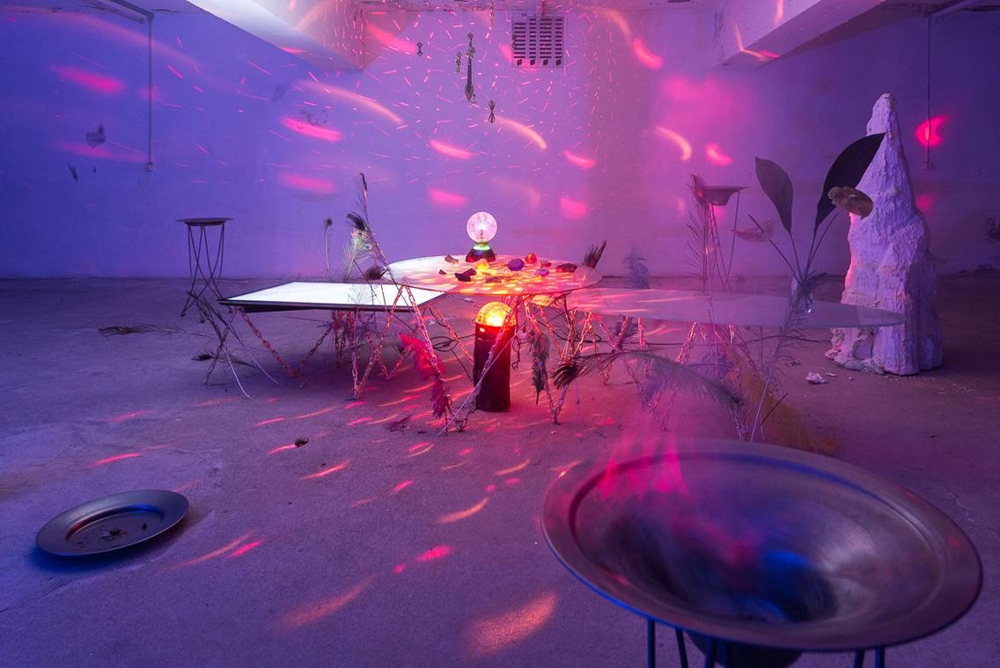

Dalibor Bača | Za kulisou
Termín: 12/05/2020 – 31/03/2021
Kurátor a autor kurátorského textu: Rado Ištok
Intervence Za kulisou umělce Dalibora Bači sestává z fyzické architektury, komory zaklesnuté do vstupní haly Galerie moderního umění (GMU), a performativních pobytů umělce v této komoře. V průběhu devíti měsíců stráví umělec v této tmavé a zvukově izolované komoře, vybavené pouze lůžkem a sociálním zařízením, tři týdenní pobyty oproštěn od konzumace jídla, jakož i zpráv z vnějšího světa včetně lidského kontaktu, médií a sociálních sítí. Zkušenosti a případná prozření z těchto pobytů bude umělec následně prezentovat v GMU začátkem roku 2021.
Název Za kulisou odkazuje k přesvědčení, že přemíra informací z médií nás spíše dezinformuje a že mnohá média v dnešní době účelově překrucují realitu a tvoří tak kulisu zastírající skutečnost. Mediální půst, ticho a tma jsou tedy nástroji k proniknutí za kulisu rušivé mediální a smyslové každodennosti a ke zklidnění a dosažení hloubky a celistvosti příznačné pro mystiku v širším než náboženském smyslu – jedním z umělcových zdrojů jsou například neurovědecké studie vědomí. Jako určitou kulisu lze ale vnímat i secesní budovu a interiér samotné galerie, bývalé banky.
Minimalistickou architekturou, zájmem o tělesné limity a změněné stavy vědomí, jakož i východní filozofie, psychedelii a antipsychiatrii je dílo Dalibora Bači blízké odkazu radikálního umění a hnutí 60. a 70. let. Zčásti ale také navazuje na odvěkou tradici poustevnictví, života v odloučení za účelem duchovního očištění a kontemplace, jež má ve východních Čechách dlouhou historii, obzvláště na Broumovsku a v jedinečném barokním areálu nedalekého Kuksu. Za kulisou je ale také volným pokračováním umělcova zkoumání lidského vědomí a osobního prožívání v době mnohonásobných krizí poukazujících na neudržitelnost stávající společnosti. Důsledky těchto nepředpokládaných obratů umělci a umělecké instituce často pociťují mezi prvními. V současné situaci nelze odhlédnout od důsledků pandemie COVID-19, jakož i opatření proti jejímu šíření, na naše životy a celou společnost. Navzdory paralelám mezi umělcovými pobyty v komoře a dnešní izolací či karanténou běžných občanů má umělecký projekt jiné výchozí body.
Mezi oběma situacemi existují podstatné rozdíly: Umělec izolaci podstupuje dobrovolně, jako odpověď na vnitřní volání, a promyšleně, po dlouhodobé tělesné i duševní přípravě. Pro mnohé z nás je izolace naopak stavem, k němuž jsme bez jakýchkoli příprav donuceni a který představuje značný nápor na naši duševní pohodu ve formě strachu a nejistoty často ústících do úzkostí. Jedním z doporučení psychologů pro život v izolaci či karanténě je ale také omezení mediální zátěže, tedy sledování informací, avšak vyhýbání se jejich přemíře, jež rezonuje s jádrem projektu Za kulisou.
Dalibor Bača (*1973, Bratislava) žije a pracuje v Praze a Bratislavě. Patří ke generaci současných umělců s klasickým sochařským vzděláním v propojení s kritickým pohledem na roli a formu monumentu ve veřejném prostoru. Byl spoluzakladatelem slovenského občanského sdružení Veřejný podstavec, které usilovalo o využití podstavců zbylých po odstraněných monumentech pro prezentaci současného umění. Ve veřejném prostoru, před Domem odborů v Bratislavě, Bača také dočasně umístil svou bustu Doc. JUDr. Robert Fico, CSc. (2010). Pozornost širší veřejnosti vyvolalo také jeho angažované dílo CZ_SK_HU_D_PL (2014) ve tvaru vlajky na výstavě Privátní nacionalizmus v Praze a Košicích, jenž je charakteristické pro umělcovo tázání po významu národních symbolů. V posledních letech se Bača zaměřuje na abstraktnější a procesuálnější, avšak neméně politické vyjádření, jako např. ve své monumentální instalaci Definitivně nedokončené (2018) v Nové synagoze v Žilině. Bortící se věže ze skleněných tabulí pospojované tajícím asfaltem v této instalaci poukazovaly na neudržitelnost společnosti v době klimatické krize. Instalace v GMU je pak volným pokračováním zkoumání lidského vědomí v kontextu vize zániku lidstva.
Rado Ištok je kurátor, redaktor a historik umění. Je kurátorem programu 4Cs: Od konfliktu ke spolužití skrze tvořivost a kulturu Umělecké kolonie v Nidě v Litvě a vedoucím výzkumného projektu Prostory péče, neposlušnosti a touhy na Královském institutu umění ve švédském Stockholmu. Mezi jeho nedávné výstavy patří Černý Atlas a Tekuté obzory v Bratislavě a Jiné vize na Přehlídce animovaného filmu v Olomouci. Přispívá do Art Antiques, Flash Artu a na Artalk.
Supported using public funding by Slovak Arts Council.


Petra Malinová | Z úcty k hlíně
GMU Bílá kostka
28/02–30/08/20
Křehký svět zkoumání krajinných námětů a jejích drobných motivů.To je tvorba Petry Malinové. V Galerii moderního umění v Hradci Králové její výstava zahájí, pod vedením kurátorky Anny Zemanové, provoz nového výstavního prostoru, Bílé kostky.
Nomen omen
Už svým poetickým jménem odkazuje Petra Malinová k principům vlastní tvorby. Studentka pražské Akademie výtvarných umění, ateliéru malby prof. Jiřího Sopka (1993–1999), se soustředí hlavně na přírodu a materiály, které příroda nabízí. Její internetová stopa je takřka nulová, protože svůj čas tráví převážně v lese. V současné době se zaměřuje na kresbu a skládání strukturálních obrazů. Experimentuje s přírodními materiály jako je hlína, popel nebo jíl. Sbírá traviny, bylinky i kvítka, které strukturovaně vrství do svých obrazů, jenž doplňuje barevnými pigmenty.
Dialog s díky a láskou
Prostor Bílé kostky je koncipován jako možnost dialogu s dalším umělcem ze sbírky Galerie moderního umění v Hradci Králové. Petra Malinová si vybrala dílo Olgy Karlíkové, s níž ji spojuje zájem o proniknutí pod povrch věcí a snaha zachytit energii růstu, energetických uzlů a složitých struktur hmoty, jež podle posledních vědeckých výzkumů je pouhou iluzí. „K výběru autorky Olgy Karlíkové a jejího díla bych ráda zmínila pár klíčových slov. V prvé řadě je to čistý záměr v tvorbě, bez pastí a manipulací, do kterých by se divák mohl chytit. Dále skromnost i čistota námětu, který umocňuje hluboký ponor projevu," vysvětluje Petra Malinová.
Intimita v Bílé kostce skrytá
Petra Malinová patří k umělcům, kteří si při práci ušpiní ruce. Součástí procesu její tvorby jsou prostor a čas na pozorování i studie, která je stejně důležitá jako výsledné dílo. Trpělivě skládá každý květ i stéblo nebo přisypává hlínu a hledá jim své místo na obraze. Její tvorba tak nespočívá jen ve výsledném díle, ale v kouzle celého procesu. Její kresby jsou velmi často tvořeny vyhořelými uhlíky
nespotřebovaného materiálu, většinou z vlastní zahrady. Autorka ve svých dílech zachycuje krásu přítomného okamžiku, stejně jako tomu bylo například u impresionistů, a zprostředkovává nám tak možnost vybavit si, jakou barvu mají červánky, jaké zvláštní magické světlo vzniká po dešti, barvu mraků na obloze, růst klíčků pažitky nebo pohled ze zamlženého okénka jedoucího vlaku.
Vyčištěný prostor Bíle kostky nám poskytuje možnost vytrhnout se z každodenního shonu, kochat se a obdivovat detaily, kterých bychom si za normální situace nevšimli. Petra Malinová nám předkládá křehké svědectví o proměně okolního světa.

Matyáš Chochola | Dějiny lidstva
GMU Prostor
28/02–30/08/20
Návrat hradečáka na domácí půdu
Místní rodák, Matyáš Chochola (1986), se z velkého světa vrací zpět, aby narušil stereotypní představu o podobě umění v konzervativním prostředí salónu republiky. Jeho persóna osciluje mezi performerem, kurátorem, mystifikátorom a šamanem post-post (-moderní, - internetové, - pravdivé) éry. Ve svých dílech formou citací propojuje archetypy mýtického dávnověku, ikonická umělecká díla, jež se v průběhu tohoto století stala předmětem uctívání, s vizualitou současného života. Výstavy Matyáše Chocholy a jeho intervence jsou psychedelickým dobrodružstvím i radostnou hrou se všemi možnostmi otevřenými do minulosti i budoucnosti.
Matyáš Chochola je držitelem Ceny Václava Chada (2012 VI. Zlínský salon mladých) a Ceny Jindřicha Chalupeckého (2016). Kromě vlastní umělecké tvorby se po řadu let věnoval i kurátorské činnosti. Jeho sólové výstavy proběhly například v italském Milánu či švýcarském Curychu. Na místní půdě měli diváci jeho díla vidět například v Národní galerii v Praze či v Plato, Ostrava.
Subjektivní pohled na dějiny
Chochola přináší do Prostoru hradecké galerie burleskní výpravnou epopej fungující jako flashback celými dějinami euroamerické kultury, která dnes prochází hlubokou krizí, jakýmsi interregnem. Starý systém přestává fungovat a nový ještě není znám natož akceptován. Myšlenkový oblouk vede slovy autora: „…od bájné Atlantidy, přes tajuplný Egypt, staré Řecko, ozvěny postmoderny až po současnou krizi, trumpisty, sexisty a feministy. Podivné Kelty, tajemné Etrusky, korporátní design, a automobilový průmysl nevyjímaje…“. Celá výstava je dobrodružnou výpravou napříč dobou a prostorem nejrůznějších kultur i komunit. Návštěvník se tak stává badatelem, Indiana Jonesem, tančícím trpaslíkem v černém vigvamu i objevitelem egyptských hrobek.
Chochola cíleně boří stereotyp západního materialistického pojetí „velkých“ dějin, které byly od doby osvícenství až donedávna vnímány jako jediný lineární příběh, v němž jedna událost následuje druhou, a návraty nejsou možné. Stejně tak zavrhuje i souběžnost mnoha příběhů bez významu. Vše souvisí se vším a nic se neděje bez příčiny a vyššího smyslu.
Sedm obrazů v jednom cyklu
Leitmotivem výstavy je zjevení existence paralelního světa magie a kouzel. Neodbytná fascinace místy propojení, energetickými uzly, v nichž dochází k transformaci vnímání sebe sama ve světě, který nás obklopuje. Výstava je symbolicky sestavena do sedmi obrazů, sedmi úrovní vývoje, jež však nakonec, podobně jako mýtický Uroboros, požírá svůj ocas. Počátek i konec tone v neproniknutelných temnotách. Oblouk je sklenut od chaosu prvopočátku života a vědomí existence (Eternal Darkness) a cyklického řádu přírody (Quattro stagioni), přes kulturu šamanů (Shamanic), rovnocenných partnerů přírodních sil, až dobám, kdy se člověk postavil do role vládce ve svém antropocentrickém universu (Alchemic Tiltyard of History, Ezo Mystic, Farao Chamber). Výjimečným místem je MCH Twin Peaks Black Lodge, vstup do paralelního vesmíru, o jehož existenci dnes vážně uvažují i představitelé „tvrdých“ přírodních věd. Vidíme už tak daleko, že dřív nemyslitelné se stalo možným. Když připustíme, že racionální popírání neexistence jiných světů, je vlastně svým způsobem negativní formou přiznání jejich existence, pak nám nic nebrání tuto skutečnost přijmout a vydat se na cestu. Přítomnost i budoucnost v Matyášově pojetí je plná naděje, krásy a radosti z objevování nových možností, stejně jako návštěva nové výstavy Dějiny lidstva v Galerii moderního umění v Hradci Králové.

Blíž k fantazii než k realitě
Výběr z díla Vladimíra Preclíka z let 1960–1965
24/05/2019–14/06/2020
Aktuální expozice Galerie Vladimíra Preclíka prezentuje výběr děl umělce z let 1960–1968, z období, které patřilo k tvůrčím vrcholům této výrazné osobnosti české sochařské scény druhé poloviny 20. století. Počátky umělecké tvorby Vladimíra Preclíka (1929–2008) byly úzce spjaty s Hradcem Králové, kde se vyučil řezbářem. Sochařskou zručnost získal studiem na Vyšší průmyslové škole sochařsko-kamenické v Hořicích v Podkrkonoší a rozvinul na Vysoké škole uměleckoprůmyslové v Praze (ateliér prof. J. Wagnera). V 60. letech exceloval jako portrétista a svá díla prezentoval na prvních individuálních a kolektivních výstavách skupiny Trasa 54, jejímž byl členem. Po roce 1960 nastalo pro V. Preclíka v mnoha ohledech velmi intenzivní umělecké období, které zásadně a pozitivně ovlivnil stipendijní pobyt ve Francii v roce 1965. Hlavním společným jmenovatelem tehdejší tvorby se stal materiál. Umělci učarovalo dřevo – tradiční sochařský materiál, který mu umožnil spojit starou řezbářskou tradici s novými sochařskými tendencemi. Svým přístupem autor vytvořil novou vizuální řeč, v níž kladl důraz na estetickou kvalitu soch/objektů z hlediska formy i barevného zpracování. Ve dřevě realizoval mnoho klíčových témat, která vyústila ve vznik sochařských cyklůVertikální kompozice, Klenotnice, Konkréty, Antistroje a Stará provensálská města.

{kind=link}